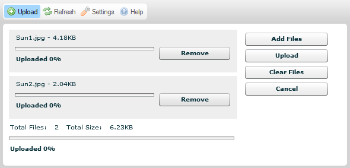

Przycisk Wy?lij (Upload) dost?pny w pasku narz?dzi CKFindera otwiera panel przesy?ania pliku, kt籀ry mo髒na wykorzysta? do dodania nowych plik籀w do aktualnego folderu.
Poni髒szy rysunek prezentuje domy?lny panel przesy?ania pliku CKFindera, kt籀ry otwiera si? po klikni?ciu przycisku paska narz?dzi.
W celu zamkni?cia (ukrycia) panelu przesy?ania pliku nale髒y nacisn?? przycisk Anuluj (Cancel) (je?li proces przesy?ania plik籀w jeszcze si? nie rozpocz??) lub przycisk Zamknij (Close) (je?li przesy?anie plik籀w zosta?o zako?czone). By ukry? panel, mo髒na tak髒e klikn?? ponownie przycisk Wy?lij (Upload) na pasku narz?dzi.
Uwaga: Przesy?anie plik籀w do serwera to termin techniczny oznaczaj?cy wysy?anie plik籀w z lokalnego komputera do komputera centralnego (znanego r籀wnie髒 jako serwer).
Panel przesy?ania pliku w CKFinderze wyst?puje w dw籀ch wersjach, w zale髒no?ci od ?rodowiska, w jakim si? pracuje. Domy?lnie we wszystkich ?rodowiskach obs?uguj?cych technologi? Adobe Flash wykorzystywana jest opcja jednoczesnego przesy?ania wielu plik籀w (ang. multiple file upload), kt籀ra pozwa wys?a? wi?ksz? liczb? plik籀w do serwera w trakcie jednej operacji. Je?li jednak Tw籀j system nie obs?uguje technologii Flash, b?dziesz m籀g? przesy?a? pojedyncze pliki do serwera w odr?bnych operacjach.
Powy髒szy rysunek prezentuje domy?lny panel przesy?ania pliku obs?uguj?cy jednoczesne wysy?anie wielu plik籀w. W przypadku system籀w nieobs?uguj?cych technologii Flash (w tym przegl?darek mobilnych) wykorzystany zostanie nast?puj?cy format panelu.

Domy?lnie CKFinder pozwala przes?a? do serwera wiele plik籀w jednocze?nie. W celu wys?ania plik籀w do serwera nale髒y wykona? kroki opisane poni髒ej.
Krok 1: Kliknij przycisk Wy?lij (Upload) na pasku narz?dzi w celu otwarcia panelu przesy?ania pliku.
Krok 2: Po otwraciu panelu przesy?ania pliku wybierz przycisk Dodaj pliki (Add Files). W oknie wyboru pliku Twojego systemu operacyjnego wska髒 plik znajduj?cy si? na Twoim komputerze, kt籀ry chcesz przes?a? do serwera.
Uwaga: Mo髒esz wskaza? dowoln? liczb? plik籀w jednocze?nie, wybieraj?c je wszystkie naraz w oknie wyboru pliku.
Krok 3: Lokalne pliki zostan? teraz dodane do kolejki przesy?anych plik籀w. Je?li chcesz doda? kolejne pliki do kolejki, kliknij ponownie przycisk Dodaj pliki (Add Files) i powt籀rz czynno?ci opisane wy髒ej.

Krok 4: Je?li zmienisz zdanie w kwestii tego, kt籀re pliki powinny by? przes?ane do serwera, mo髒esz w dowolnym momencie albo usun?? pojedynczy plik z kolejki, klikaj?c przycisk Usu? (Remove) obok jego nazwy, albo anulowa? ca?y proces przesy?ania za pomoc? klikni?cia przycisku Anuluj (Cancel) w panelu przesy?ania pliku.
Krok 5: Je?li zako?czy?e? proces wyboru plik籀w, mo髒esz klikn?? przycisk Wy?lij (Upload) w celu rozpocz?cia procesu przesy?ania plik籀w do serwera. Post?p ca?ego procesu, a tak髒e poszczeg籀lnych plik籀w, mo髒na obserwowa? na bie髒?co na ekranie.

Krok 6: Poczekaj na zako?czenie procesu przesy?ania plik籀w. Po jego zako?czeniu zawarto?? folderu zostanie od?wie髒ona, a ostatnio przes?any plik zostanie wybrany w panelu plik籀w.
Je?li technologia Adobe Flash nie jest obs?ugiwana w Twoim systemie, przesy?anie plik籀w za pomoc? CKFindera nadal b?dzie dzia?a?o, cho? b?dzie ograniczone do przesy?ania jednego pliku jednorazowo. W celu przes?ania pliku do serwera nale髒y wykona? kroki opisane poni髒ej.
Krok 1: Kliknij przycisk Wy?lij (Upload) na pasku narz?dzi w celu otwarcia panelu przesy?ania pliku.
Krok 2: Po otwarciu panelu przesy?ania pliku wybierz przycisk Przegl?daj (Browse). W oknie wyboru pliku Twojego systemu operacyjnego wska髒 plik znajduj?cy si? na Twoim komputerze, kt籀ry chcesz przes?a? do serwera.
Uwaga: Podpis tego przycisku mo髒e si? r籀髒ni? w poszczeg籀lnych przegl?darkach internetowych.
Krok 3: Lokalny plik zostanie teraz wybrany. W tym wariancie mo髒esz przes?a? do serwera jeden plik jednocze?nie.
Krok 4: Je?li zako?czy?e? proces wyboru pliku, mo髒esz klikn?? przycisk Wy?lij wybrany plik (Upload Selected File) w celu rozpocz?cia procesu przesy?ania plik籀w do serwera. Post?p ca?ego procesu mo髒na obserwowa? na bie髒?co na ekranie.

Krok 5: Poczekaj na zako?czenie procesu przesy?ania pliku. Po jego zako?czeniu zawarto?? folderu zostanie od?wie髒ona, a ostatnio przes?any plik (lub ostatni z kilku przes?anych plik籀w) zostanie wybrany w panelu plik籀w.
Nast?puj?ce komunikaty o b??dach mog? zosta? wy?wietlone po wys?aniu pliku.
Komunikat ten wskazuje, 髒e nazwa przesy?anego pliku jest ju髒 w u髒yciu przez inny plik znajduj?cy si? w tym samym folderze. W celu unikni?cia konfliktu kolejny numer ("1") zosta? dodany do oryginalnej nazwy pliku.
Plik, kt籀ry pr籀bowa?e? przes?a? do serwera, nie zosta? zaakceptowany.
Najcz?stszym powodem tej sytuacji jest takie skonfigurowanie CKFindera przez administratora, w kt籀rym dozwolone jest przesy?anie plik籀w jedynie z wybranymi rozszerzeniami. Rozwi?zanie to ma na celu zabezpieczenie serwera przed wys?aniem niedozwolonych plik籀w. Innym powodem mo髒e by? przekroczenie dozwolonego rozmiaru pliku przesy?anego do serwera. W takim przypadku serwer powinien zosta? skonfigurowany przez administratora w taki spos籀b, aby dopuszcza? pliki o wi?kszych rozmiarach.
Przes?any plik zawiera kod HTML. Z powod籀w bezpiecze?stwa tylko pliki z wybranymi rozszerzeniami mog? zawiera? kod HTML.
Prosimy o kontakt z administratorem w celu uzyskania informacji o plikach, kt籀re s? akceptowane przez CKFindera, oraz o dopuszczalnym limicie rozmiaru pojedynczego pliku.